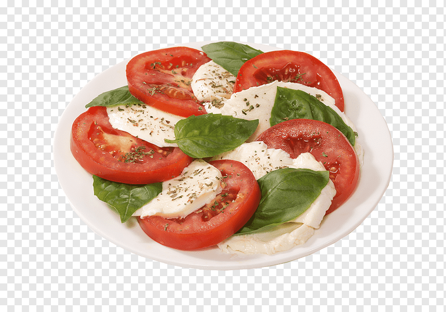

Caprese Salad

Description
This classic Italian caprese salad is quintessential summer fare. Serve with a chilled white wine and enjoy in the sunshine or on a balmy summer evening!
Ingredients
- 3 large heirloom tomatoes, sliced, or to taste
- 1 (16 ounce) package fresh mozzarella cheese, sliced
- ½ cup fresh basil leaves
- 3 tablespoons extra-virgin olive oil
- 1 pinch salt and ground black pepper to taste